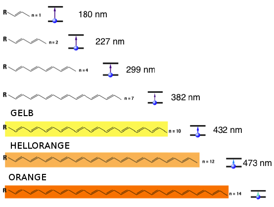
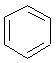

Skript - Farbstoffe
Einführung
Mit Hilfe dieses Skriptes sollen Sie sich das Thema Farbstoffe selbstständig erarbeiten. Selbstständig bedeutet wirklich SELBST und STÄNDIG.
Der Unterricht im klassischen Sinne hat aufgehört. Sie können Ihr eigenes Tempo bestimmen und sich Ihre eigenen Partner suchen. Sollte die Lehrkraft nicht da sein, haben Sie nun immer das Material um selbstständig zu arbeiten.
Die Lehrkraft soll Ihnen dabei als Berater zur Seite stehen. Wenn Sie Fragen haben oder auf Probleme stoßen, die Sie weder allein noch im Team lösen konnten, dann fragen Sie nach!
Für jedes Kapitel dieser Reihe ist angegeben, wie Sie vorgehen sollten. Die Vorüberlegungen sollen Ihnen helfen Wissen zu reaktivieren oder Wissenslücken zu schließen. Wenn Sie sich an die vorgegebenen Vorgehensweisen hallten, sollte es keine Probleme geben.
Vielleicht fragen Sie sich jetzt, warum die Lehrer so faul sein dürfen und Sie jetzt alles allein machen müssen. Der Grund ist recht einfach: die Lehrer haben alles bereits so vorbereitet, dass Sie sich intensiv mit einem Thema beschäftigen können. Dadurch bleibt es besser in Ihrem Gedächtnis. Sie lernen effektiver die Inhalte, verbessern Ihr eigenes Zeitmanagement und analysieren Ihre eigenen Fähig- und Fertigkeiten.
Symbole im Skript

In diesen Texten finden Sie Erklärungen und Hintergründe!
Die Quellen finden Sie in den Fußnoten. Diese Quellen können Ihnen auch als Quizvorbereitung
helfen.
Übrigens, nicht alle Quellen sind Wikipedia. Aber es ist eine nützliche und in Chemie
akzeptierte
Quelle.
Bild: Information by dDara from the Noun Project
An diesen Stellen sollen Sie Ihr Wissen auffrischen!
Sie sollten die entsprechenden Themen schon vorher im (Chemie-)Unterricht behandelt
haben.
Falls nicht, arbeiten Sie Ihre Wissenslücken bitte selbstständig auf.
Bild: Arrow by Aleksandr Vector from the Noun Project
Es soll keine Langeweile aufkommen.
Wenn Sie mit den Aufträgen bereits fertig sind, während Ihre Gruppe noch arbeitet,
können Sie sich hier noch weiter in das Thema vertiefen.
Bild: thunder by Pascal Heß from the Noun Project
Dieses Symbol weißt immer auf eine Durchführung für ein Experiment hin.
Bild: Chemistry by Eucalyp from the Noun Project

Das Zeitsymbol soll Ihnen zeigen, wie lange Sie für das jeweilige Kapitel brauchen sollten.
Diese Zeitangabe dient aber nur als Orientierung. Am Ende müssen Sie nur die Planung der
Lehrkraft und Ihre
eigene Zeitplanung beachten.
Bild: clock by Mr. Minuvi from the Noun Project
Bewertung
Die Bewertung im Semester erfolgt anhand von:
- min. 2 Tests
- 2 Protokollen
- Mitarbeit im Unterricht
- digitalem Portfolio
- ggf. Klausur
Auf Grund unvorhergesehener Umstände (z.B. Pandemie) kann sich diese Liste auch ändern. Bitte halten Sie mit Ihrer Lehrkraft Rücksprache.
Das digitale Portfolio
Das Portfolio ist ein Teil der Arbeit und Bewertung. Zum einen dient es der Sicherung und Sammlung aller Arbeitsergebnisse. Sie können und sollten in diesem Portfolio alles sammeln, was Sie an Materialien und Produkten selbst erarbeitetet haben. Die zweite Funktion des Portfolios ist die Darstellung Ihrer eigenen Entwicklung. Mit Hilfe des Portfolios belegen Sie Ihren Lernfortschritt und reflektieren Ihre Arbeitsergebnisse und Arbeitsweisen. Diese Reflexion sollte sich auf alle Arbeitsprozesse, wie z.B. Recherchen oder Gruppenarbeiten, beziehen. Die Selbstreflexion sollte unabhängig von den Arbeitsaufträgen der Lehrkraft erfolgen.
Darüber hinaus können Sie dieses Portfolio auch als Teil Ihrer zukünftigen Bewerbungsmappen nutzen. Ihr zukünftiger Arbeitgeber erlangt dadurch ein umfassenderes Bild von Ihnen. Sehen Sie das Portfolio also nicht nur als weiteren Schulhefter sondern auch als Selbstdarstellungsmöglichkeit.
Die Bewertung des Portfolios erfolgt zum Ende des jeweiligen Semesters und erfolgt mit Hilfe des gegebenen Bewertungsrasters.
Hilfreiche Fragen für die Reflexion
Falls Sie anfangs bei der Reflexion Probleme haben, können Sie sich erst einmal an diesen Fragen orientieren. Die Reflexion sollten Sie regelmäßig durchführen und als Fließtext ausformulieren.
- Habe ich die Zeit effektiv genutzt?
- Habe ich alle Aufträge gelöst?
- Habe ich alles verstanden?
- Habe ich gut allein gearbeitet?
- Habe ich gut in der Gruppe gearbeitet?
- Was kann ich in der nächsten Stunde besser machen?
Netzdiagramm zur Schnellreflexion
In Ihrem digitalen Portfolio sollen Sie Ihren Arbeits- und Lernprozess sinnvoll reflektieren um Verbesserungsmöglichkeiten zu finden und dann umzusetzen. Dazu sollten Sie regelmäßig, also beispielsweise nach jedem Kapitel, eine Reflexion durchführen.
Dieses Netzdiagramm soll Ihnen dabei helfen. Sie können den Code für das Diagramm an die jeweilige Stelle in ihrem digitalen Portfolio kopieren und dort anpassen. Dadurch visualisieren Sie für sich ihren Fortschritt. Am Ende sollte das Netzdiagramm komplett gefüllt sein.
Zusätzlich sollten Sie die Reflexion in einem Fließtext ausformulieren. Das könnten Seite auch unterhalb des Diagramms in Ihrem Portfolio machen.
Bewertung des digitalen Portfolios
| Umsetzung digitales Portfolio (Gewicht: 1) | |
|---|---|
| 1BE | 2BE |
| HTML | schönes HTML |
| 3BE | 4BE |
| HTML,CSS | schönes HTML, schönes CSS (JavaScript) |
| Dokumentation (Gewicht: 2) | |
|---|---|
| 1BE | 2BE |
| Weniger als zur Hälfte erfüllt | Mehr als zur Hälfte erfüllt |
| 3BE | 4BE |
| Weitgehend erfüllt | Vollständig erfüllt |
| Reflexion (Gewicht: 3) | |
|---|---|
| 1BE | 2BE |
| Kaum Reflexionsfähigkeit erkennbar. Die Kurzreflexionen wurden selten genutzt oder das Semester wurde abschließend reflektiert oder die Reflexion wurde während des Semsters manchmal vorgenommen. | Reflexionsfähigkeit zum Teil erkennbar. Die Kurzreflexionen wurden selten genutzt. Das Semester wurde abschließend reflektiert oder die Reflexion wurde während des Semsters manchmal vorgenommen. |
| 3BE | 4BE |
| Gute Reflexionsfähigkeit erkennbar. Die Reflexion wurde mehrfach während des Semsters vorgenommen. Die Kurzreflexionen wurden genutzt. Das Semester wurde abschließend ergänzend reflektiert. | Sehr gute Reflexionsfähigkeit erkennbar. Die Reflexion wurde mehrfach während des Semsters vorgenommen. Die Kurzreflexionen wurden sinnvoll genutzt. Das Semester wurde abschließend ausführlich ergänzend und glaubhaft reflektiert. |
Tätowierungen
Farbstoffe finden sie in vielen Gegenständen im Alltag und wir werden uns mit verschiedenen Beispielen für Farbstoffe beschäftigen. Ein Beispiel, dass vielleicht für Sie interessant ist, sind Tätowierungen. Die nutzen auch verschiedene Farbstoffe.
Am Ende dieses Kapitel sollen Sie ... :
- die Hintergründe von Tätowierungen erklären können.
Vorgehensweise:
- Arbeiten Sie erst allein und vergleichen Sie abschließend in Gruppen.

90min
Tätowierungen
Auftrag: Informieren Sie sich zu Tätowierungen.
- Informieren Sie sich mit Hilfe der gegebenen Quellen.
- Nutzen Sie die QR-Codes.
- Sichern Sie Ihre Erkenntnisse in Form eines Tattoos.

|
|

|
Farbigkeit und Struktur
Farbigkeit kann viele Gründe haben. Wir werden uns hauptsächlich mit den chemischen Ursachen und den wichtigen Molekülstrukturen beschäftigen.
Am Ende dieses Kapitel sollen Sie ... :
- die Hintergründe von Farbigkeit erklären können.
- den Zusammenhang von absorbierten und reflektiertem Licht und Farbeindruck erklären können.
- den Zusammenhang von Farbigkeit und konjugierten Doppelbindungen bzw. PI-Bindungen erklären können.
Vorgehensweise:
- Arbeiten Sie erst allein und vergleichen Sie abschließend in Gruppen.
90min
Hintergründe von Farbigkeit
Auftrag: Erarbeiten Sie sich mit Hilfe des Materials die Grundlagen von farbigen Molekülen.
- Erklären Sie das Phänomen des Regenbogens.
- Erklären Sie, warum rote Paprika im Sonnenlicht rot erscheinen. Erklären Sie, wie die Paprika aussehen würde, wenn man es mit gelben Licht und blaugrünem Licht bestrahlt.
Weißes Licht (wie es die Sonne oder andere Lichtquellen ausstrahlen) setzt sich kontinuierlich aus elektromagnetischen Wellen zusammen (wobei jede Welle durch eine Frequenz f gekennzeichnet ist). Es entspricht einem Teilchenstrom von Photonen, wobei jedem Photon die Energiemenge E = h ⋅ f zugeordnet wird. Bricht man einen Strahl dieses weißen Lichtes an einem Prisma, werden die einzelnen Wellenlängenbereiche des Lichts, die jeweils verschiedenen Farben entsprechen, unterschiedlich stark gebrochen und das weiße Licht wird so in seine Spektralfarben zerlegt. Das heißt alle Farben dieses kontinuierlichen Farbspektrums sind im weißen Licht enthalten und der Gesamteindruck aller Farben des Spektrums zusammen ergibt die Farbe Weiß. Dieses Farbspektrum ist für das menschliche Auge nur im Wellenlängenbereich von 400nm (violett) bis zu 700nm (rot) sichtbar.
Zur Farbigkeit von Körpern kommt es durch die Wechselwirkung von Licht und Materie. Die
Materie besteht aus Atomen bzw. Molekülen, deren Elektronen ganz bestimmte Atom- bzw.
Molekülorbitale besetzen. Bei Energiezufuhr kann es passieren, dass ein Elektron aus einem
besetzten Orbital in ein unbesetztes, energiereicheres angehoben wird.
Trifft nun Licht auf einen Gegenstand, so werden durch Absorption die Photonen eines
bestimmten Wellenlängenbereiches vernichtet und das Atom bzw. Molekül gelangt in einen
"angeregten" Zustand. Das heißt ein Elektron springt von seinem ursprünglichen in ein
höheres Orbital, wobei die Energiedifferenz dieser beiden Orbitale der Energie des
absorbierten Photons entsprechen muss.
Der Grundzustand hierbei ist das höchste besetzte Energieniveau – man nennt dieses
Energieniveau auch HOMO: Highest Occupied Molecular Orbital. Der angeregte Zustand
entspricht dem niedrigsten unbesetzten Energieniveau (LUMO: Lowest Unoccupied Molecular
Orbital).
Wie viel Energie erforderlich ist, hängt von der Energiedifferenz zwischen HOMO und LUMO ab.
Die für die Anregung notwendige Energie entspricht der Energie des absorbierten Lichts. Je
kleiner die Energiedifferenz zwischen HOMO und LUMO ist, desto energieärmeres - also
langwelligeres - Licht reicht für die Anregung aus und umgekehrt. Je größer die
Energiedifferenz, desto kurzwelliger (energiereicher) ist es.
Das nicht absorbierte Licht wird von dem Körper entweder reflektiert oder hindurch gelassen.
Es kann für unsere Augen nun nicht als weiß erscheinen, da es nicht mehr die absorbierten
Lichtwellen der jeweiligen Frequenz enthält (denn nur der Farbeindruck aller Spektralfarben
zusammen ist weiß). Die Mischfarbe der restlichen, abgestrahlten Spektralfarben ergibt die
eigentliche Farbe des Stoffes, wie sie für uns sichtbar ist. Die absorbierte Farbe und die
Restfarbe sind zueinander komplementär und werden deshalb auch Komplementärfarben genannt.
Bei der Farbe, die vom menschlichen Auge einem Gegenstand zugeordnet wird, handelt es sich
also nicht um die von dem Körper absorbierte, sondern um die Mischfarbe der abgestrahlten
Farben. Zwei Komplementärfarben ergänzen sich gegenseitig immer zu weiß.
Aus dem angeregten Zustand kehren die Elektronen unter Abgabe der aufgenommenen Energie
wieder in den Grundzustand zurück. Die Energie kann in Form von thermischer Energie oder in
Form von Licht wieder abgegeben werden.

Experiment - Bromierung von Tomatensaft
Verschiedene chemische Strukturen sind für die Farbigkeit von Stoffen verantwortlich. Mit Hilfe eines einfachen – leider für die Schule zu gefährliches – Experimentes sollen Sie die grundlegenden Strukturen herausarbeiten.
Auftrag: Beobachten und werten Sie das Video-Experiment aus. Nutzen Sie dazu die unten gegebenen Fragen.
- Tomatenketchup enthält den roten Farbstoff Lycopin, ein Vertreter der Carotinoid. Diese Farbstoffe finden sich auch in Möhren, Paprika etc. Lycopin hat ein Absorptionsmaximum bei 469nm. Es absorbiert also im grünlich-blauen Bereich.
- Beschreiben Sie das Molekül in Bezug auf Mehrfachbindungen. Benennen Sie die besondere Struktur (Tipp: Material zu Orbitalen, Aromaten und Doppelbindungen).
- Erläutern Sie anhand eines vereinfachten Mechanismus die Reaktion von Lycopin mit Brom. (Tipp: Br 2 , Additionsreaktion, eine Doppelbindung)
- Würde man die Farbentwicklung genauer beobachten, würde man feststellen, dass sich die Lösung von rötlich, über gelb zu farblos färbt. Beschreiben Sie die Veränderung der Farbe mit Hilfe der Wellenlängen und Absorbtionsbereiche.
- Erklären Sie den Zusammenhang von Struktur und Farbigkeit.
Strukturformel des Lycopins
Auftrag: Üben Sie und beantworten Sie die gegebenen Fragen.
- Weißes Licht fällt auf die Tomate. Erklären Sie warum die Tomate rot erscheint.
- Erklären Sie, wie der Tomatensaft aussehen würde, wenn man ihn mit Licht der Wellenlänge 469nm bestrahlen würde.
- Vermuten Sie, wie sich die Struktur von β-Carotin von Lycopin unterscheidet. Nutzen dazu die Informationen aus dem Absorptionsspektrum.
- Eine Gottheit ihrer Wahl will eine zweite Erde schaffen. Dort sollen die Tomaten nicht rot sondern blau sein. Erklären Sie, wie Sie (als Chefchemiker dieser Gottheit) den Farbstoff verändern müssen, damit die Tomaten blau sind. (Kümmern Sie sich nicht darum, ob der Farbstoff genießbar ist!)
- Recherchieren Sie andere Beispiele für Farbstoffe, die eine ähnliche Struktur wie Lycopin haben.
Bathochromie
Farbigkeit kann viele Gründe haben. Bisher haben Sie sich mit einfachen Strukturen beschäftigt, die Farbe erzeugen können. Es geht aber auch anders und eleganter!
Am Ende dieses Kapitel sollen Sie ... :
- die Hintergründe der Bathochromie und des bathochromen Effekts erläutern können.
- die Veränderung des Farbeindrucks durch Einsatz bestimmter funktioneller Gruppen vorhersagen können.
Vorgehensweise:
- Arbeiten Sie erst allein und vergleichen Sie abschließend in Gruppen.
90min
Der bathochrome Effekt
Auftrag: Lesen Sie den Text und erklären Sie eine weitere Möglichkeit Farbigkeit zu erzielen.
- Vergleichen Sie die Farbigkeit der gegebenen Stoffe mit Hilfe Ihrer bisherigen Kenntnisse zu diesem Thema. Gehen Sie dabei auch insbesondere auf die Struktur ein. Nennen Sie mögliche Widersprüche.
- Recherchieren und erläutern Sie den Begriff Bathochromer Effekt anhand der gegebenen Beispiele.
- Stellen Sie alle mesomeren Grenzstrukturen des Benzols und des Anilins auf (Tipp: Elektronen klappen um). Nutzen Sie dazu auch das Zusatzmaterial.
- Erweitern Sie Anilin so, dass eine Vergrößerung des bathochromen Effekts stattfindet.
- Eine Gottheit Ihrer Wahl, möchte anstatt roter Tomaten nun blaue Tomaten. Machen Sie einen Strukturvorschlag (ausgehend vom Lycopin), der nicht mit einer Verlängerung der konjugierten ᴨ-Systeme arbeitet. Begründen Sie Ihren Vorschlag.
- Recherchieren und erklären Sie kurz den gegenteiligen Effekt.
Übersicht Farbigkeit und Länge konjugiertes ᴨ-System
Benzol - farblos
Anilin - gelblich
Farbstoffe
Nachdem wir geklärt haben, warum Dinge farbig sind, wollen wir uns nun mit den Molekülen beschäftigen, die die Farbigkeit erzeugen.
Am Ende dieses Kapitel sollen Sie ... :
- die verschiedenen Molekülstrukturen der verschiedenen Farbstoffklassen erkennen und benennen können.
- die Veränderung des Farbeindrucks mit Hilfe der Molekülstrukturen und des Struktur-Eigenschaften-Konzepts erläutern können.
Vorgehensweise:
- Arbeiten Sie erst allein und vergleichen Sie abschließend in Gruppen.
90min
Die Strukturen der Farbstoffe
Als Farbstoff werden chemische Verbindungen bezeichnet, die die Eigenschaft haben, andere Materialien zu färben. Sammelbezeichnung für alle farbgebenden Stoffe gemäß DIN55943 dagegen ist der Begriff Farbmittel, wobei Farbstoffe als solche nur diejenigen Farbmittel sind, die auch in ihren Anwendungsmedien löslich sind, während die übrigen, unlöslichen Farbmittel als Pigmente bezeichnet werden.
Farbstoffe im obigen Sinn werden vorwiegend zum Färben von Textilien, Papier und Leder verwendet, während bei der Einfärbung von Kunststoffen und Lacken die Benutzung von Pigmenten überwiegt. Darüber hinaus gibt es funktionelle Farbstoffe für spezielle Einsatzbereiche wie CDs, DVDs, Biomarker, LC-Displays. Eine besondere Abteilung unter den Farbstoffen schließlich bilden die zum Färben von Lebensmitteln dienenden Lebensmittelfarbstoffe, die deshalb auch besonderen Qualitätsanforderungen unterliegen und als Lebensmittelzusatzstoffe gelten.(Quelle: https://de.wikipedia.org/wiki/Farbstoff)
Im Unterricht werden wir uns nur mit einigen synthetischen und natürliche Farbstoffen beschäftigen.
Auftrag: Erstellen Sie eine Übersicht über die verschiedenen Farbstoffklassen.
- Recherchieren und analysieren Sie die Strukturen der Farbstoffe und ordnen Sie sie in der vorgegebenen Tabelle (im Hefter) ein.
- Nutzen Sie die Beispiele hier und hier.
- Recherchieren Sie anschließend die Verwendungsmöglichkeiten!
{kind=link}
| Name | Azofarbstoffe | Triphenylmethanfarbstoffe | Anthrachinonfarbstoffe/Carbonylfarbstoffe |
|---|---|---|---|
| Strukturmerkmal (LEWIS-Formel) | |||
| Beschreibung Strukturmerkmal | |||
| Beispiele | |||
| Verwendung |
Triphenylmethanfarbstoffe
Auftrag: Zeichnen Sie die Grundstruktur eines Triphenylfarbstoffes und erläutern Sie die Farbigkeit der Verbindung!
- Ein Rest soll eine -NH2-Gruppe sein. Zwei Reste sollen Wasserstoff sein.
- Zeichnen Sie mindestens zwei mesomere Grenzstrukturen und erläutern Sie damit die Farbigkeit!
- Erläutern Sie ausgehend von diesem Molekül, wie sie eine Farbvertiefung erreichen können. Achten Sie auf die korrekte Fachsprache!
Auftrag: Erklären Sie die Färbetechnik bei der Hollywood Hair Barbie!
- Führen Sie das gegebene Experiment durch und schreiben sie ein ausführliches Protokoll!
- Beantworten Sie die unten stehenden Fragen als Teil ihrer Auswertung!
- Besprechen Sie das Abgabedatum mit Ihrer Lehrkraft!
Phenolphthalein ist einer der bekanntesten pH-Indikatoren und wurde erstmals 1871 von Adolf von Baeyer dargestellt. Phenolphthalein ist ein Triphenylmethanfarbstoff und bildet die Basisverbindung der Familie der Phthaleine. Der Stoff wurde früher oft als Abführmittel eingesetzt nun aber nicht mehr, da größere Mengen im Verdacht stehen Krebs zu verursachen. In geringen Mengen nutzte man ihn auch als Indikator.1 Bei der Hollywood Hair Barbie wird Phenolphthalein zum Färben der Haare genutzt. In seinem Grundzustand ist es ein farbloser, fester Stoff.
1) Lösen Sie einige Tropfen Phenolphthalein in Wasser. Geben Sie tropfenweise Natriumhydroxidlösung dazu, bis es zum Farbumschlag kommt. Lösen Sie dann festes Natriumhydroxid in der Lösung, bis es wieder zum Farbumschlag kommt. (Zunächst 1-2 Plättchen, Rühren bis NaOH(s) sich löst) Entsorgen Sie die Lösung im Abfluss!
2) Für schnelle Chemiker - mit Lehrkraft: Lösen Sie einige Tropfen Phenolphthalein in Wasser. Geben Sie tropfenweise konzentrierte Schwefelsäure dazu, bis es zum Farbumschlag kommt.
Für die Entsorgung: Verdünnen Sie die Lösung anschließend in einem großen Becherglas in sehr viel Wasser! Erst das Wasser, dann die Säure!!! Entsorgen Sie die Lösung!
Fragen für die Auswertung
- Erläutern Sie mit der Hilfe von mesomeren Grenzstrukturen, warum sich die Farbigkeit des Moleküls ändert.
- In der Sprayflasche der Barbie findet man NaOH. Erklären Sie die Haarfärbetechnik der Barbie!
- NaOH-Lösung bildet mit dem CO2 der Luft Natriumhydrogencarbonat. Das Hydrogencarbonat ist ein Protonendonator. Erläutern Sie, warum sich die Färbung nach einiger Zeit auflöst.
- Bewerten Sie die Eignung dieses Färbeverfahrens für die Hollywood Hair Barbie!